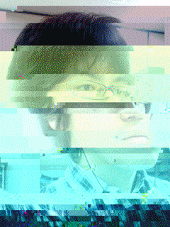

大山 奥人 Okuto Oyama
1989年10月30日秋田県能代市生まれ。 能代高等学校を卒業後、2008年岩手大学入学。
2010年より映像メディア研究室に配属。 イラストレーション、グラフィックデザイン、 webデザイン、漫画の制作を中心的に行う。
その他、現代美術やソーシャルネットワーク、 プログラミングの分野への研究活動も行う。
また個人サークル「MAJIGIRE」の代表として 2011年より同人活動も開始。
＜＜